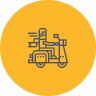

Locate with app
Use the app to find the nearest scooter to you. We are continuously placing scooters in the areas with most demand, so one should never be too far away.

Pick your scooter
We show the most important info for the scooters closest to you. So you know how much charge they have left and can see roughly how much it will cost.

Enjoy the ride
Scan the QR code and the bike will unlock. Retract the cable lock, put on a helmet, and you’re off! Always lock bikes away from walkways and accessibility ramps.